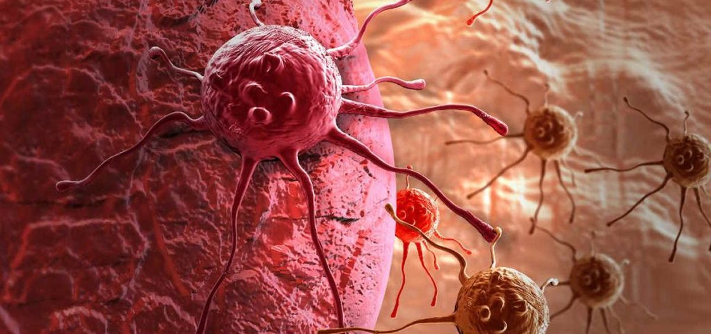

Cáncer
Descripción
El cáncer es una enfermedad caracterizada por el crecimiento descontrolado de células anormales que pueden invadir y dañar tejidos y órganos del cuerpo.
Causas
Las causas del cáncer son múltiples y pueden ser modificables o no. Algunos de los factores de riesgo más conocidos incluyen el tabaquismo, el consumo excesivo de alcohol, la exposición a radiación, y la obesidad.
Síntomas
- Fatiga
- Pérdida o auemnto de peso
- Bultos o engrgosamientos
- Cambios en la piel
Pruebas y exámenes
Análisis de sangre, análisis bioquímico de la sangre, exámenes de detección, biopsia líquida y citología, exámenes físicos y antecedentes familiares.
Tratamiento
Cirugía, radioterapia, quimioterapia y terapia dirigida.
Expectativas
Las expectativas en pacientes con enfermedades oncológicas son variadas y dependen de varios factores, incluyendo el tipo de cáncer, la etapa del cáncer, la edad del paciente y la disponibilidad de tratamientos avanzados.